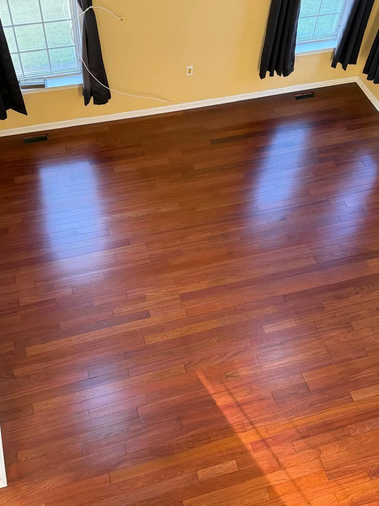
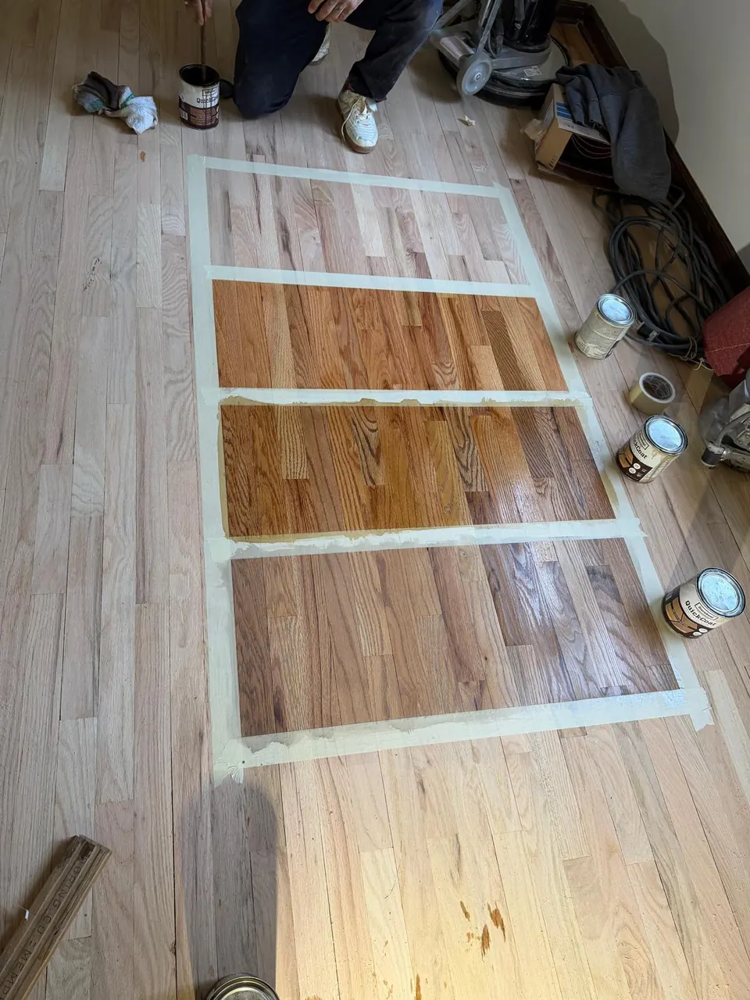
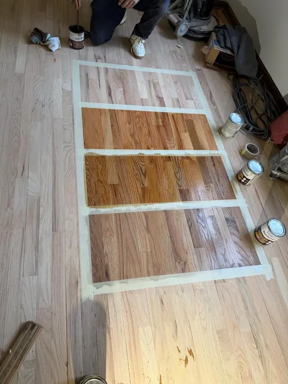

Top Hardwood Flooring Trends for Westfield and Summit Homes in 2026
Carpet keeps disappearing from high-end New Jersey homes. In 2026 the biggest trend is simple: clean, natural-looking hardwood that makes rooms brighter, warmer and more valuable.

Lighter, darker, warmer, cooler. The same stain looks different on red oak, white oak and maple, and different again in a north-facing room versus a sunny one. So in Union County and North Jersey homes we don't ask you to pick from a chart.

After sanding, we tape out squares on your floor and apply the stains you're considering, usually three to six. You look at them in your own light, morning and evening if you want, and pick from the real thing.
Tones are approximate; species and finish shift them, which is exactly why we sample on your floor before you decide.

Tap a color. Popular names shown; we can also blend two stains to match a sample you bring us.
Stain only soaks into raw wood, so the floor is fully sanded first.
We tape out squares and apply the stains you're considering, usually three to six.
Morning and evening if you want. Then you pick.
Applied evenly and left to dry. Dark colors usually get an extra day.
Two or three coats of finish on top protect the color.
No stain, just clear finish. Light and warm on oak, nearly white on maple with a water-based finish.
Classic warm tones that hide dust and fit older homes.
Modern, cooler look. Works best on white oak; red oak needs a bleaching or toning step to kill the pink.
Dramatic. Shows dust and scratches more, so we usually pair it with a satin or matte finish.
My floors look beautiful! Costa was very detailed in helping me find the right color and gloss. Everything came out even better than I had hoped.
Renato arrived even earlier than scheduled. He did a fantastic job sanding, staining, and refinishing multiple rooms and stairs. Great to work with!
Excellent renovation of our home flooring. The team was friendly, responsive, and highly organized. Impeccable, clean work throughout.
No. Stain has to soak into bare wood, and any old finish blocks it. Staining is always part of a full sand and refinish.
Usually one extra day of drying before finish, especially in humid summer weather.
Yes. Once sanded, the old color is gone. Most floors look far lighter raw than people expect.
Yes. If we're doing stairs or weaving new boards into an old floor, everything gets stained at the same time with the same batch so it reads as one floor.
Click any photo to see it larger.


Sand to bare wood, optional stain, two or three coats of finish. The job that changes a house the most.
Refinishing details
Drum, edge and buffer sanding with dust containment. The step everything else depends on.
Sanding details
Treads and risers sanded, stained to match the floor and finished, or new oak treads over old steps.
Stair detailsCarpet keeps disappearing from high-end New Jersey homes. In 2026 the biggest trend is simple: clean, natural-looking hardwood that makes rooms brighter, warmer and more valuable.

Sanding and finishing is only half the schedule. Drying, curing and moving furniture back take time too. Here's how to work backward from your holiday gathering.

Scratches, fading, stains and dull finishes can make floors look old and neglected. In many cases you don't need to replace them: refinishing brings them back to life.